In this section we present qualitative results and quantitative results showing the effect of the note
expression control parameters.
In the proposed system, 7 note expression controls are designed and extracted:
amplitude_mean: 0-1, extracted by taken mean dB scale amplitude over a note. Controls overall volume of a
note. (larger value -> larger volume)
amplitude_std: 0-0.2, extracted by taken standard deviation of the amplitude over a note. Controls the
extent of the volume changing in a note (crescendo & decrescendo or not). (larger value -> more extense
volume changing)
amplitudes_max_pos: 0-1, extracted by calculating the relative position of maximum amplitude in a note.
Controls the volume changing in a note (crescendo & decrescendo, together with amplitude_std). (larger value
-> later reach maximum volume)
attack_level: 0-0.4, extracted by calculating the mean of noise magnitude over first 10 frames of a note.
Controls the extent of note attack (strong or soft). (larger value -> larger attack)
brightness: 0-0.4, extracted by calculating the mean of centroid of harmonic distribution over a note.
Controls the timbre of a note. (larger value -> brighter / more amplitude on higher harmonics)
vibrato_rate: 0, 3-9, in an interval of 0.25 (0, 3, 3.25, 3.5, ..., 9). Extracted by applying fft on f0
contour over a note. Controls the rate of the vibrato of a note. (larger value -> larger vibrato rate)
vibrato extend: 0-1, extracted by applying fft on f0 contour over a note. Controls the extend of the vibrato
of a note. (larger value -> larger vibrato extend)
By tuning one or more controls, other advance performance expression can be achieved:
Staccato: by decreasing amplitudes_max_pos, increasing amplitude_std, and optionally decreasing
brightness.
Legato: by decreasing attack_level.
Qualitative Control Effect
Here we present the effect of note expression control by change the expression note controls
and show the spectrogram and synthesizer parameters of the results.
Controlling common articulations and expressions
Ground-truth
Reconstruction
Vibrato
None Vibrato
Crescendo
Decrescendo
Staccato
Strong Attack
Weak Attack
Relative Control (Modification)
X axis: amplitude_mean, Y axis: amplitude_std
Spectrogram
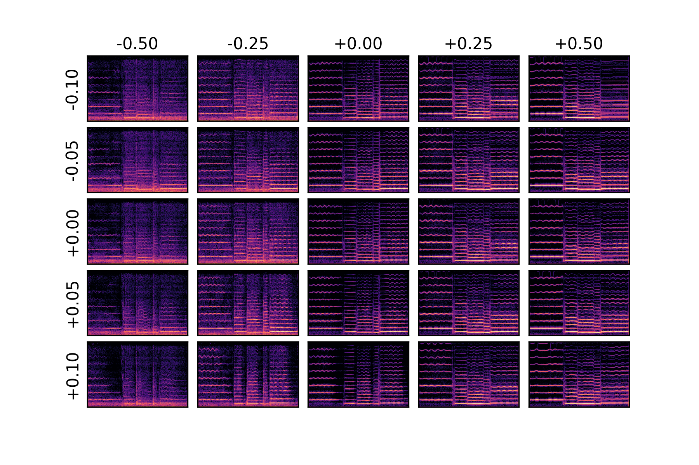
Amplitudes
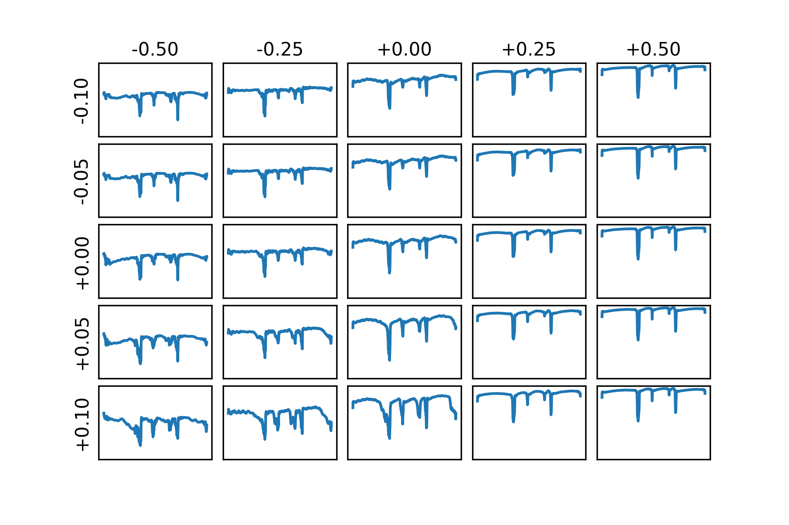
X axis: vibrato_extend, Y axis: vibrato_rate
Spectrogram
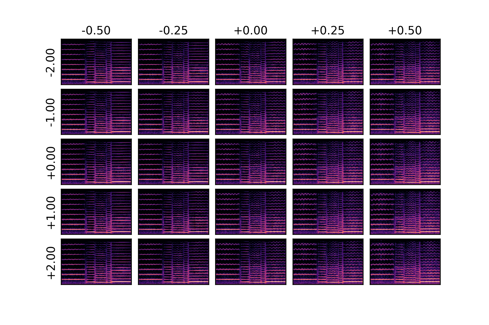
F0
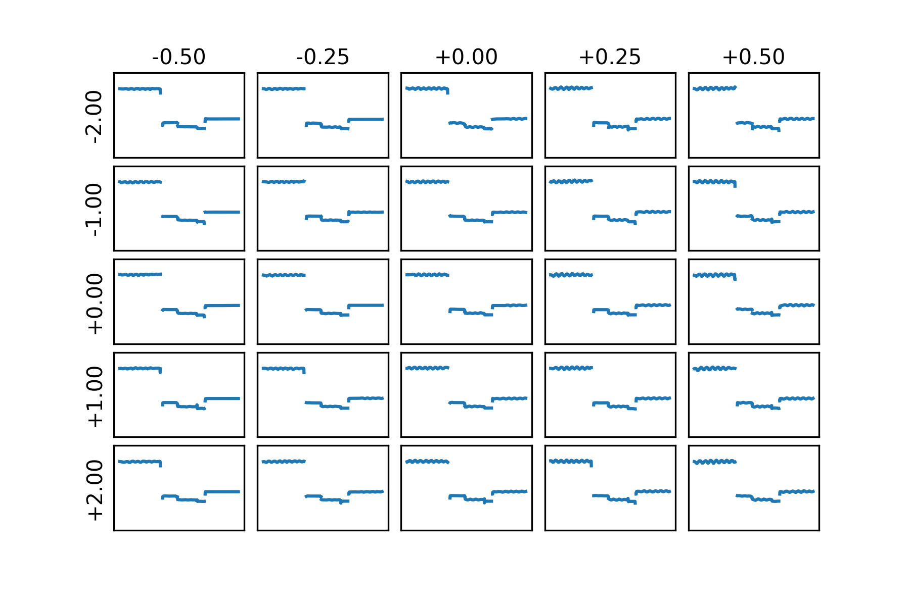
amplitude_max_pos
Spectrogram
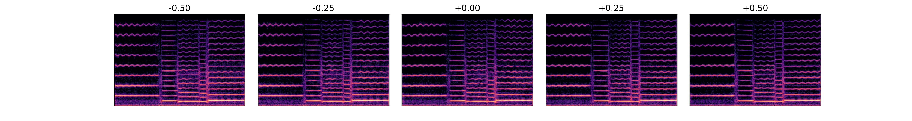
Amplitudes
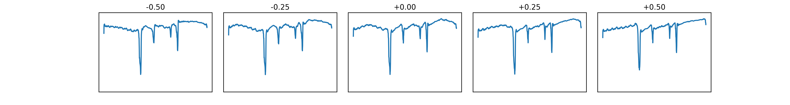
Brightness
Spectrogram
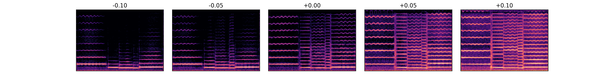
Centroids of Harmonic Distribution
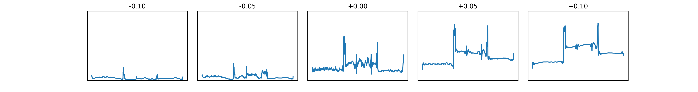
Attack Level
Spectrogram
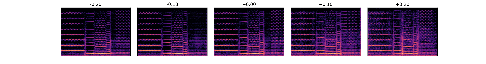
Noise Magnitude
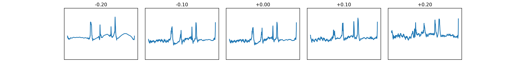
Absolute Control
X axis: amplitude_mean, Y axis: amplitude_std
Spectrogram
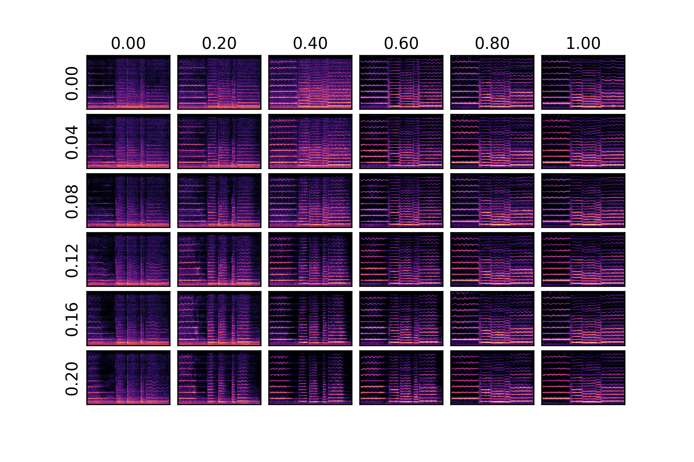
Amplitudes
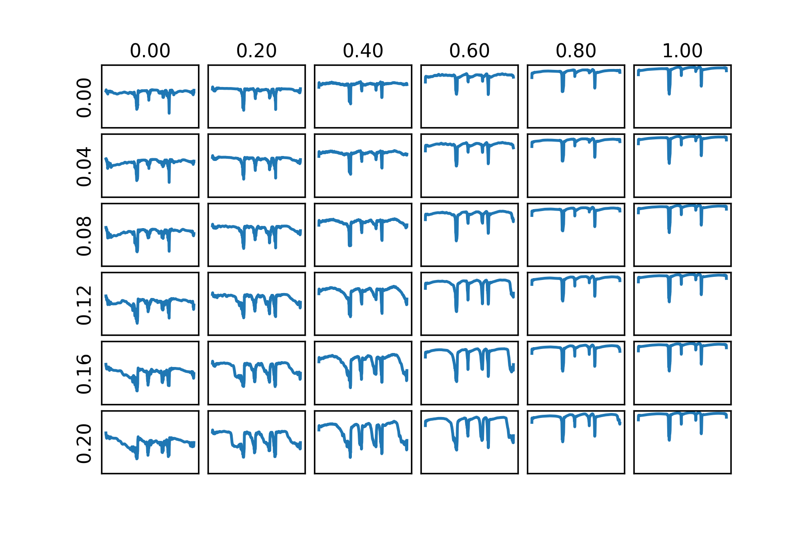
X axis: vibrato_extend, Y axis: vibrato_rate
Spectrogram
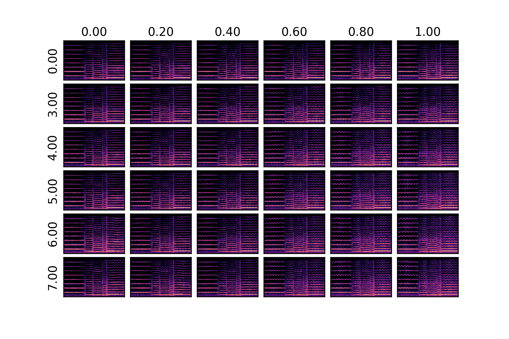
F0
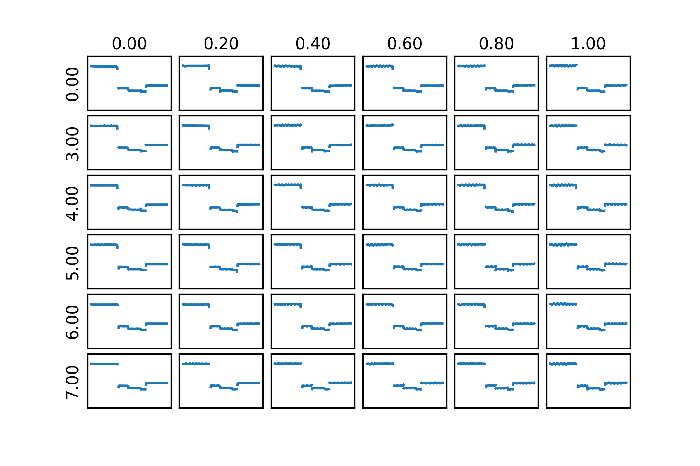
amplitude_max_pos
Spectrogram
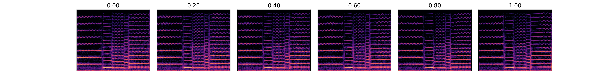
Amplitudes
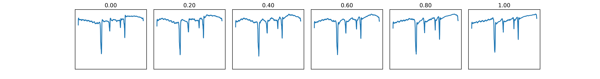
Brightness
Spectrogram
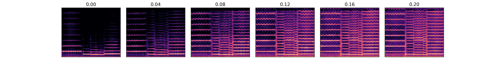
Centroids of Harmonic Distribution
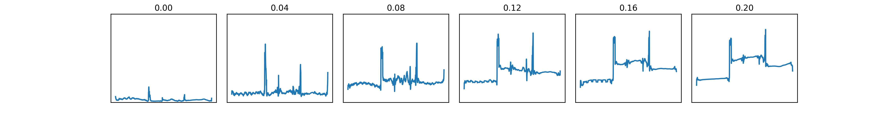
Attack Level
Spectrogram
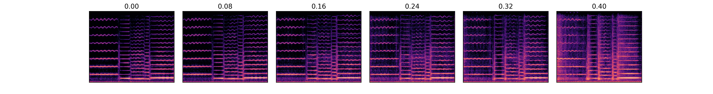
Noise Magnitude
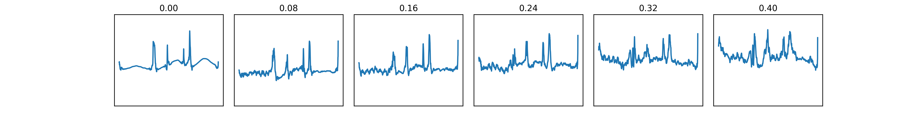
Quantitative Control Effect
Here, we present quantitative evaluation results of the note expression controls.
We take each sample in the test-set,
change one of its note expression control and extract value of the changed note expression control.
That is, we compare the effect of the note expression control in control space.
Conclusion:
The control results is not a strictly linear identity function.
There are difference between input and output in target space.
But it has good correlation.
The vibrato_rate control cannot control the vibrato rate effectively.
Other controls are more or less effective. The amplitude_max_pos control are usually the least effective.
The effectiveness of controls (i.e. whether the results correlate with control input) varies with different
instrument.
For example, instruments with little vibrato will have a hard time controlling the extend of the
vibrato.